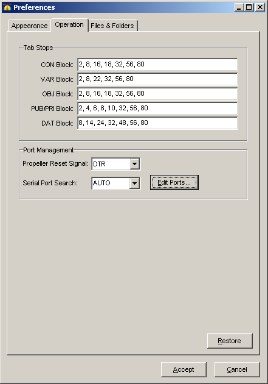
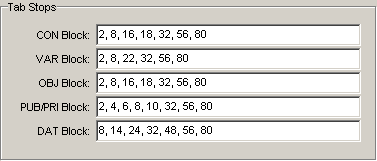
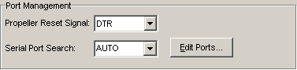

The Preferences dialog allows you to view and set persistent features of the Propeller Tool software. Settings are arranged by category into tabs and group boxes.
The Operation tab contains settings that affect functional aspects of the editor and communication with the Propeller chip.


The Tab Stops group indicates tab stop positions for different portions of source code. Each Spin block (CON, VAR, OBJ, etc.) has its own tab stop settings indicated by the corresponding field. Enter tab stop positions as a comma-delimited list from lowest to highest.
The offset between the last two positions of a tab stop list is repeated endlessly after the final indicated position. For example, there are implied tab stops at positions 104, 128, 152, etc. since the last two indicated positions are 24 characters apart (80 - 56 = 24); 80 + 24 = 104, 104 + 24 = 128, etc.

The Port Management group contains settings for Propeller chip communication.
A Restore button appears on every preference tab. Pressing the Restore button resets all the settings of that tab to their defaults without affecting those of other tabs.
Pressing the Accept button makes all changes on all preference tabs official and active in the Propeller Tool.
Pressing the Cancel button returns all changed settings, on all preference tabs, back to their original state; the state they were in when the Preferences dialog was opened.
Propeller Help Version 1.2
Copyright © Parallax Inc., dba Parallax Semiconductor
6/17/2011
 Propeller Reset Signal
Propeller Reset Signal